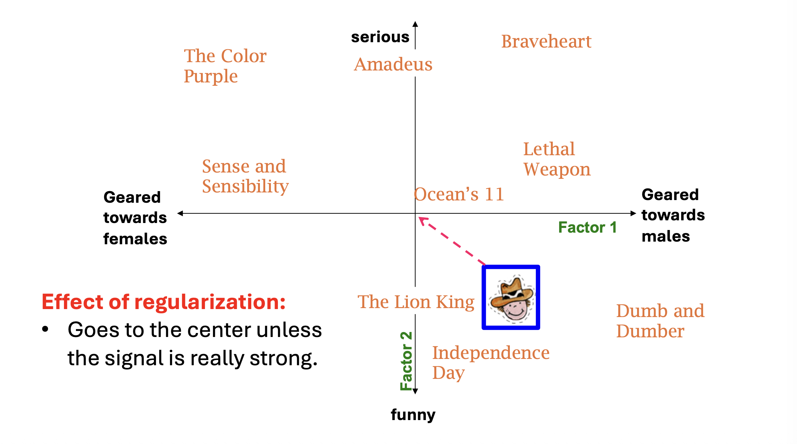
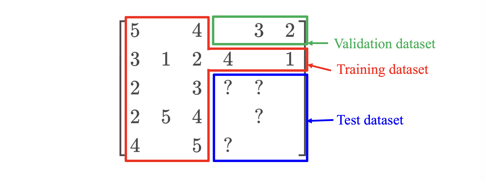
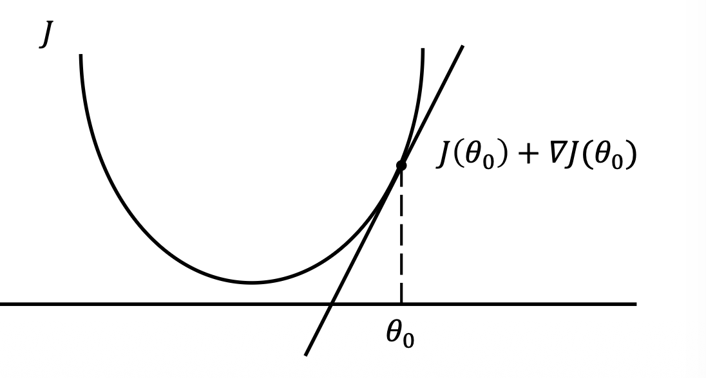
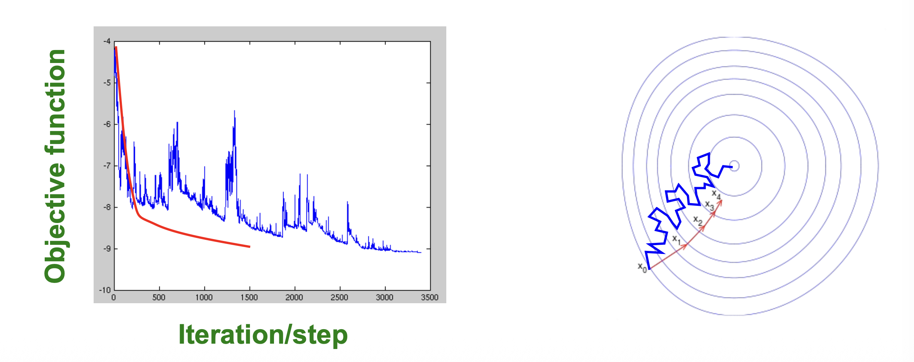

1. 머신러닝으로서의 추천 시스템 (Machine Learning Perspective)
이전 포스트에서 우리는 유틸리티 행렬 \(R\)을 두 개의 저차원 행렬 \(U\)와 \(V\)의 곱으로 근사하는 UV 분해(UV Decomposition)의 기본 개념을 살펴보았습니다. 이번에는 이 과정을 머신러닝(Machine Learning)의 관점에서 엄밀하게 재정의해보겠습니다.
전통적인 데이터 마이닝이나 초기 협업 필터링(CF)은 주로 엔지니어가 데이터 간의 유사도(Similarity measure) 규칙을 직접 설계(Design)하여 추천을 수행했습니다. 반면, 머신러닝 기반의 UV 분해는 시스템이 주어진 데이터 \(R\)로부터 잠재 요인 행렬(Factor matrices)을 스스로 학습(Learn)하도록 만듭니다.
우리는 이 학습된 행렬들이 원본 행렬의 단순한 행/열 데이터보다 사용자와 아이템의 특성을 훨씬 더 잘 반영할 것이라 기대합니다. 하지만 SVD와 달리 수학적으로 닫힌 형태의 해(Closed-form solution)가 존재하지 않으므로, 우리는 목적 함수(Objective Function)를 정의하고 이를 최소화하는 최적화 알고리즘을 사용해야 합니다.
1.1. 목적 함수 (Objective Function) 정의
- 우리의 목표는 훈련 데이터(Training data) 집합 \(E\)에 대하여 오차 제곱합(SSE)을 최소화하는 행렬 \(U^*\)와 \(V^*\)를 찾는 것입니다.
\[U^*, V^* = \arg\min_{U,V} J(R, U, V)\]
- 여기서 목적 함수 \(J(R, U, V)\)는 다음과 같이 정의됩니다:
\[J(R, U, V) = \sum_{(x,i) \in E} (r_{xi} - u_x^\top v_i)^2\]
- 이 식에서 학습의 대상이 되는 행렬 \(U\)와 \(V\)를 파라미터(Parameters)라고 부르며, 잠재 차원의 수 \(k\)와 같이 사람이 직접 설정해야 하는 값들은 하이퍼파라미터(Hyperparameters)라고 부릅니다.
2. 과적합(Overfitting)과 정규화(Regularization)
2.1. 목적 함수의 괴리 (Mismatch in Objective Function)
우리가 \(J(R, U, V)\)를 훈련 데이터에 대해 최소화하고 있지만, 추천 시스템의 진짜 목표는 아직 관측되지 않은 ’테스트 데이터(Unseen test data)’에 대한 예측 오차를 줄이는 것입니다.
잠재 요인의 수 \(k\)를 계속 늘리면 더 많은 파라미터가 생기므로 훈련 데이터에 대한 \(J(\cdot)\) 값은 거의 항상 감소합니다. 하지만 \(k\)가 지나치게 커지면, 모델이 데이터의 내재적 패턴이 아닌 무의미한 노이즈(Noise)까지 외워버리게 되어, 실제 테스트 데이터에서의 성능은 오히려 악화(Rise)되기 시작합니다. 이를 과적합(Overfitting)이라고 합니다.
2.2. 정규화 (Regularization) 도입
과적합을 방지하고 모델의 복잡도를 제어하기 위해(Control the model complexity) 정규화(Regularization) 기법을 목적 함수에 추가합니다. 정규화는 데이터가 충분할 때는 유연한 모델링을 허용하지만, 데이터가 부족한(Scarce) 곳에서는 모델의 파라미터가 비정상적으로 커지는 것을 강하게 억제(Shrinks)합니다.
L2 정규화(Ridge 패널티)가 추가된 새로운 목적 함수는 다음과 같습니다:
\[J(R, U, V) = \sum_{(x,i) \in E} (r_{xi} - u_x^\top v_i)^2 + \lambda_1 \sum_x ||u_x||_2^2 + \lambda_2 \sum_i ||v_i||_2^2\]
- 여기서 \(\lambda_1\)과 \(\lambda_2\)는 정규화의 강도를 조절하는 하이퍼파라미터이며, 이 항들은 잠재 벡터 \(u_x\)와 \(v_i\)의 유클리드 길이(Length)가 무한정 커지는 것을 제한합니다.

2.3. 검증 데이터 (Validation Data) 활용
- 하이퍼파라미터(예: \(k, \lambda_1, \lambda_2\))를 최적의 값으로 설정하기 위해, 전체 훈련 데이터를 다시 분할하여 검증 데이터(Validation dataset)를 도입합니다. 훈련 중 검증 데이터에서의 성능을 지속적으로 모니터링하며, 이를 테스트 성능의 대리 지표(Proxy)로 활용하여 언제 학습을 멈춰야 할지(Early stopping) 결정합니다.

3. 최적화: 경사하강법 (Gradient Descent)
- 정해진 목적 함수를 최소화하기 위한 대표적인 알고리즘은 경사하강법(Gradient Descent, GD)입니다.
3.1. 경사하강법의 원리
- 임의의 파라미터 \(\theta_0\)에서 시작하여, 목적 함수 \(J(\theta)\)의 도함수(Derivative, \(\nabla J\))를 계산합니다. 기울기의 반대 방향(Reverse direction)으로 한 걸음(Step)씩 이동하며, 기울기가 충분히 작아질 때까지 이 과정을 반복합니다.
\[\theta_1 \leftarrow \theta_0 - \nabla J(\theta_0)\]

3.2. UV 분해에서의 경사하강법 적용
- UV 분해 행렬 \(U, V\)를 학습하기 위한 전체 프로세스는 다음과 같습니다:
- 초기화 (Initialization): SVD를 사용하여 \(U\)와 \(V\)를 초기화합니다(이때 빈칸은 0으로 취급합니다). 이는 무작위 초기화(Random initialization)보다 훨씬 안정적이고 좋은 결과를 냅니다.
- 파라미터 업데이트: 도함수에 학습률(Learning rate, \(\eta\))을 곱하여 행렬을 업데이트합니다.
- \(U \leftarrow U - \eta \cdot \nabla_U J(R, U, V)\)
- \(V \leftarrow V - \eta \cdot \nabla_V J(R, U, V)\)
- 구체적으로 행렬 \(U\)의 특정 원소 \(u_{xc}\) (사용자 \(x\)의 \(c\)번째 잠재 요인)에 대한 업데이트 식을 미분하여 도출해보면 다음과 같습니다.
\[u_{xc} \leftarrow u_{xc} - \eta \cdot \nabla_{u_{xc}} J(R, U, V)\] \[\nabla_{u_{xc}} J(R, U, V) = \sum_{i: (x,i) \in E} -2v_{ic}(r_{xi} - u_x^\top v_i) + 2\lambda_1 u_{xc}\]
4. 확률적 경사하강법 (Stochastic Gradient Descent, SGD)
4.1. 왜 SGD를 사용하는가?
전통적인 GD는 한 번의 파라미터 업데이트를 위해 모든 관측 데이터 집합 \(E\)에 대해 오차와 그래디언트를 합산해야 합니다. 이는 대용량의 추천 시스템 데이터에서는 지나치게 느리고 연산 비용이 높습니다(Too slow for large data).
이 문제를 해결하기 위해 확률적 경사하강법(Stochastic Gradient Descent, SGD)을 도입합니다. 전체 데이터의 합 \(\sum_{(x,i) \in E}\)을 구하는 대신, 개별 평점 데이터 하나 \(r_{xi}\)를 확인할 때마다 곧바로 파라미터를 업데이트하는 방식입니다.
- GD의 업데이트: \(U \leftarrow U - \eta \cdot \left[ \sum_{(x,i) \in E} \nabla J(r_{xi}, U, V) \right]\)
- SGD의 업데이트: 각각의 \((x,i) \in E\)에 대하여, \(U \leftarrow U - \eta \cdot \nabla J(r_{xi}, U, V)\)
4.2. 수렴 특성 (Convergence of SGD vs. GD)
- GD는 매 스텝마다 모든 데이터를 고려하므로 목적 함수 값이 항상 안정적으로 개선되지만, 한 스텝을 내딛는 데 매우 긴 시간이 소요됩니다.
- SGD는 개별 샘플의 노이즈 때문에 지그재그 형태로 다소 불안정하게(Noisy way) 이동하지만, 1 에포크(전체 데이터를 한 번 훑는 과정) 동안 수많은 스텝을 밟기 때문에 전체적인 수렴 속도는 훨씬 빠릅니다.

4.3. UV 분해를 위한 SGD 알고리즘
수렴할 때까지 반복되는 SGD의 구체적 학습 알고리즘은 다음과 같이 정리할 수 있습니다.
모든 평점 데이터 \(r_{xi} \in E\) 에 대하여 순회하며:
- 예측 오차(Error) 항을 계산합니다. \[\epsilon_{xi} \leftarrow 2(r_{xi} - u_x^\top v_i)\]
- 사용자 잠재 벡터 \(u_x\)를 업데이트합니다. \[u_x \leftarrow u_x + \eta(\epsilon_{xi} v_i - \lambda_1 u_x)\]
- 아이템 잠재 벡터 \(v_i\)를 업데이트합니다. \[v_i \leftarrow v_i + \eta(\epsilon_{xi} u_x - \lambda_2 v_i)\]
참고: 실무에서는 속도와 안정성의 균형(Balance between speed and stability)을 맞추기 위해 극단적인 1개의 샘플 단위(True SGD)가 아닌, \(B\)개의 샘플을 묶어 연산하는 미니배치 SGD(Mini-batch SGD)를 널리 사용합니다.